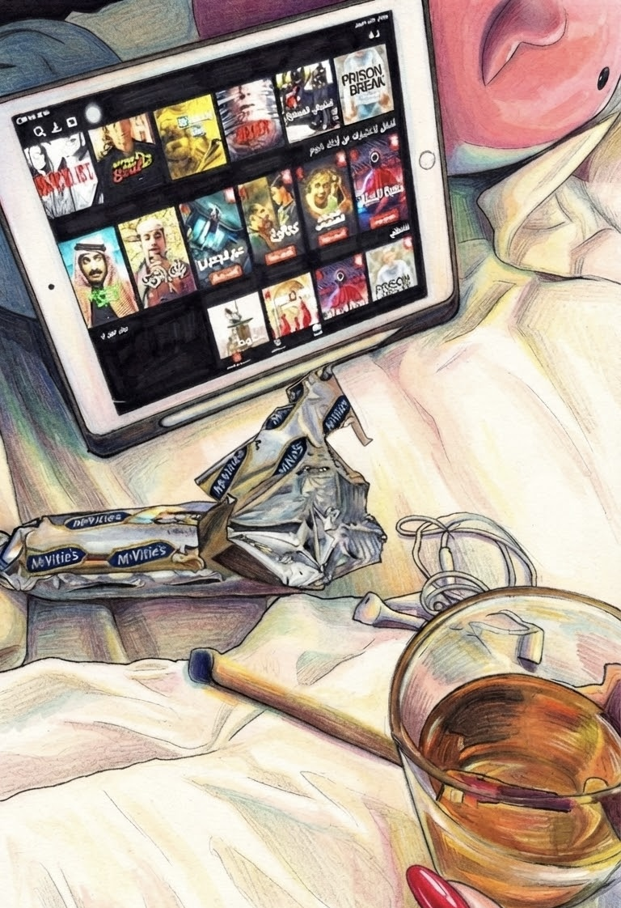
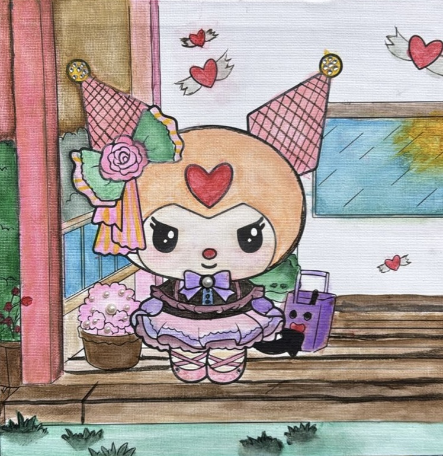
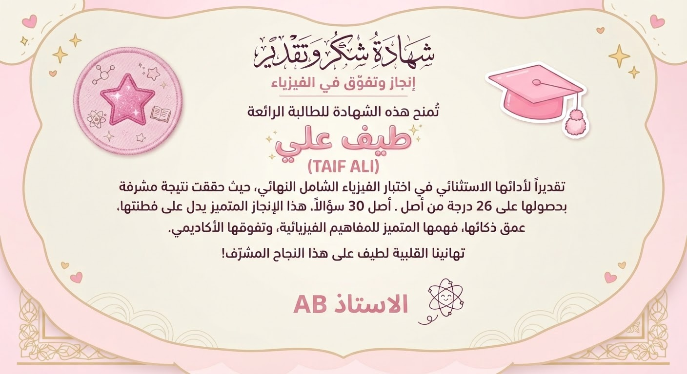

Welcome to the
World of Taif
أهلاً بك في عالم طيف
كسكونٍ يأتي بعد المطر؛ تفاصيل صغيرة ولحظات دافئة اجتمعت في مكانٍ صُنع ليبقى لها مدى العمر وما كُتب هنا ليس إلا قطرةً من بحر طيف؛ جزءٌ يسير من حكايةٍ أراد من صنعها أن تبقى معها ما بقي من عمرها.
WHO IS TAIF?
من هي طيف؟
حين تعرفها ستجد نفسك تائهًا فيها، ولا يكاد عقلك ينفكّ عن التفكير فيها. هي طيف، ابنة أبيها، معشوقها الأول، ولكن خلف هذا الاسم فتاةٌ تحمل في قلبها من المشاعر ما يجعلها أكبر من أن تُختصر في وصف تضحك من قلبها، وتحزن في صمتها، وتحب بكل ما فيها.قد تخفي حزنها خلف ضحكة، وتخفي خوفها خلف عناد، وتخفي شوقها خلف هدوءٍ لا يقول شيئًا هي طيف فتاةٌ لا تُعرف من ملامحها فقط، بل من الأشياء الصغيرة التي لا تظهر إلا لمن اقترب من قلبها.
TAIF MOMENTS
لحظات طيف

ضوء الصباح
صباحات طيف لها طقسها الخاص؛ تبدأ بفوضاها التي تليق بها حتى وهي في أشدّ حالاتها عبثًا، ثم لا تلبث أن تستعيد سكونها وأناقتها في لحظات، وكأن الترتيب خُلق ليزداد بها جمالًا. وحتى في فوضاها… تبقى طيف أجمل من أن تُربكها الفوضى.
حديث طيف
لن يخلو يوم طيف من نقاشٍ أو جدال؛ تارةً بحدّةٍ تليق بشخصيتها وتارةً بمزاحٍ يكسوه الحب. فهي لا تعرف الوحدة طويلًا، وحتى إن اختارتها يومًا، ستجعل من وحدتها أجمل صحبةٍ لنفسها..
تأنقها
طيف مكتملةٌ في جمالها وأنوثتها، ومع ذلك يزداد جمالها كلما منحت نفسها من الدلال ما تستحق؛ كأن الكمال فيها لا يكتفي بأن يكون كاملًا، بل يجد دائمًا طريقًا ليزداد.
TAIF’S FAVORITE GAME
لعبة طيف المفضلة

Color Trace
تحب طيف تلوين الرسومات؛ وكأنها لا ترى العالم بلونه المعتاد، فتضيف إليه من خيالها لونًا آخر، وتترك في كل رسمة شيئًا صغيرًا يشبهها.
EXPLORE ↗WHAT DOES TAIF MEAN?
ماذا تعني طيف؟
طيف.. فتاةٌ في بداية العشرين وكأن العمر لم يفتح لها أبوابه بعد بل تركها معلّقةً بين حلمٍ سماء. و في عينيها مستقبلٌ واسع كالسحاب لا تعرف أين ينتهي ولا كم من الأمنيات يسكن خلفه. تحلم كثيرًا وكأنها تعرف أن العالم لم يمنحها أجمل أيامها بعد. ولعل أجمل ما في طيف أنها ليست مجرد فتاةٍ جميلة بل حكايةٌ جميلة لم تُكتب فصولها كلها بعد.
GENTLE FEELINGS
مشاعر لطيفة
WHAT'S BEST IN TAIF
أجمل ما في طيف
TAIF'S FRIEND
صديقة طيف
شهد هي من نقصد ف بينها وبين طيف ضحكات غبية لا تحتاج إلى سبب، والكلام لا يفهمه أحد سواهما، ونظرات واثقة لا يعرف أحد ماذا تخفي خلفها.. وكأن لكل واحدة منهما لغة سرية لا تحتاج إلى كلمات. يكفي أن تلتقي أعينهما حتى تبدأ الحكاية، وتتحول أبسط اللحظات إلى ذكرى لا تُنسى
STATE OF TAIF
دولة طيف
عالمٌ صُنع منذ اللحظة التي وضعت فيها طيف يديها حول عينيها واختبأت بداخلهما، أو حين غطّت نفسها واختبأت بين طيات غطائها. عالمٌ تحكمه قوانين الحب والهدوء والجمال البصري، وتحيط به السكينة من كل جانب ليس لهذا العالم حدود جغرافية، ولا تحدّه الخرائط، بل يمتد حيثما امتد الخيال
Taif Achievements
إنجازات طيف
ذكاؤها الآسر يكاد يضاهي جمالها، حتى يخال المرء أنها جمعت في امرأةٍ واحدة ما عجزت الأرض عن جمعه في نسائها؛ عقلٌ يُبهر، وجمالٌ يُفتن، وحضورٌ لا يُشبه سواه .

TAIF'S FAVORITE COLORS
ألوان طيف المفضلة
CYAN / السماوي
من الجبل معرفة ان في مرحلة ماء من حياتها كانت السماء هي متسعها في النظر وكان تواسيها في تخطي جغرافيتها ووحدتها فكان السماوي يرافقها بين الوانها وهو عكس ماتحب أرتداءه وهو عشقها الأبدي الأسود .
PINK / الوردي
يمثل الدفء والرقة والجانب الحالم الحنون في عالم طيف والطفولة اللتي لازالت تنبض فيها بعنادها وفرحها وحتى حين تواجه الصعوبات ، بطفولتها تتخطاها مع قليلاً من دهاء الأطفال .